Colorblind Style uses your smartphone camera to identify colors and tell you if your outfit works — built for color vision deficiency.
Download on the App Store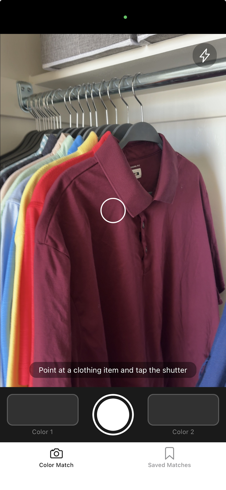
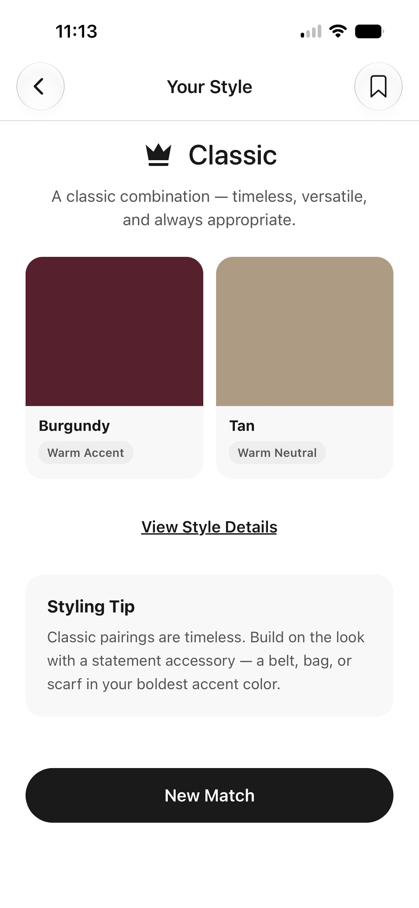
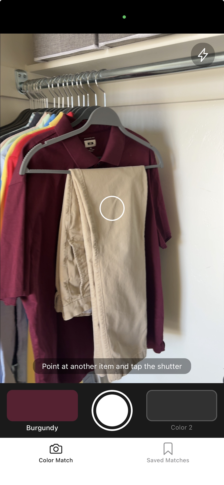
For the millions of people living with color vision deficiency, matching clothes is a daily challenge. Colorblind Style gives you a personal style advisor in your pocket — one that actually understands color so you don't have to.
Aim your camera at any clothing item and get an instant, specific color name. Not just "green" — olive, sage, forest, or teal.
Scan two items and find out how well they work together. Every match comes with a style category, occasion guide, and styling tips.
When colors clash, Colorblind Style suggests what would work better instead.
Build a personal library of outfit combinations that work for you.
When a color reads as gray, see exactly where it falls on the color spectrum and what hue it's leaning toward.
No account required. No data collected. Your camera stays on your device — always.
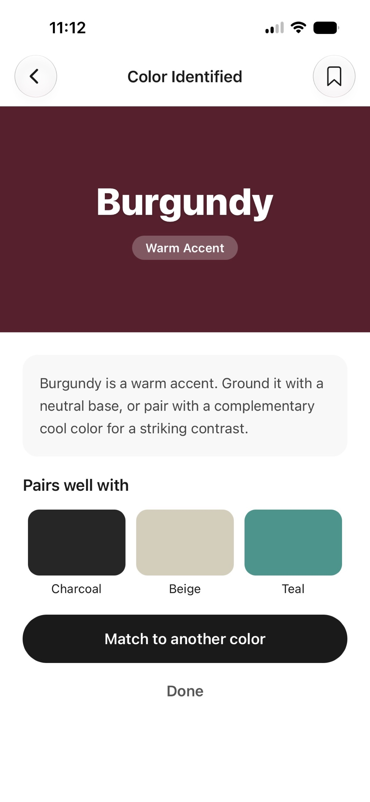
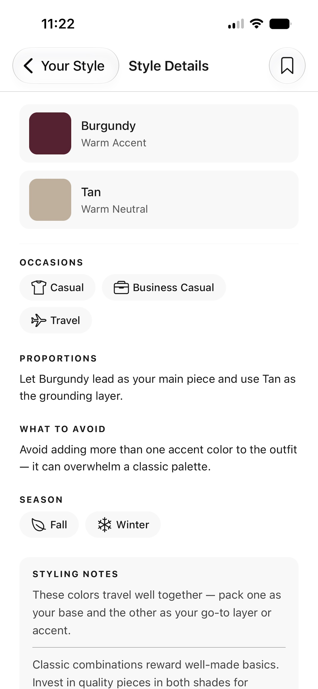
Three complete color matches on us. Unlock unlimited matches and saves forever with a single one-time purchase of $4.99.
Download on the App StoreFree to download · iPhone only · No account required
Every color combination gets a full style verdict — Classic, Bold, Harmonious, or Playful. See which occasions it works for, what seasons it suits, and exactly how to wear it with confidence.
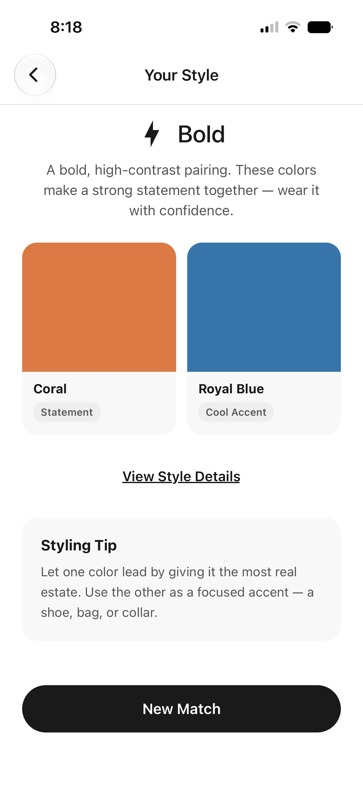
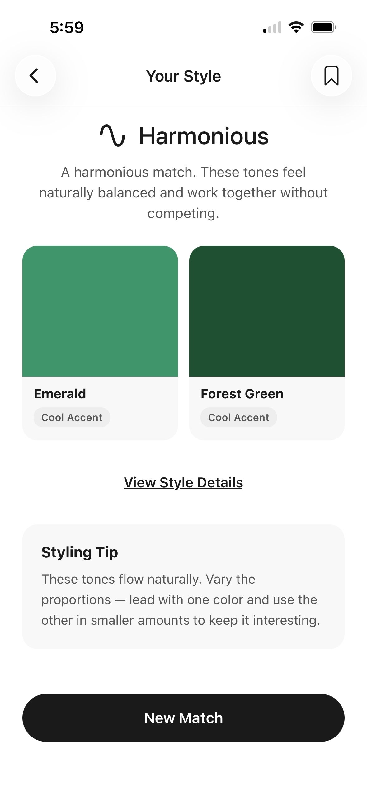
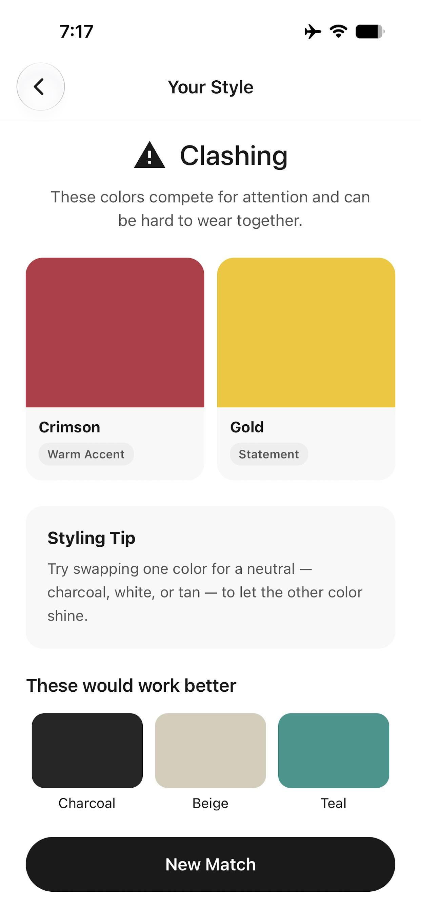
When colors clash, Colorblind Style doesn't just tell you — it shows you what would work better instead. Three alternative colors that pair well with what you already have.
Build a personal library of outfit combinations. Every saved match includes the color names, wardrobe roles, and style verdict so you can recreate your best looks effortlessly.
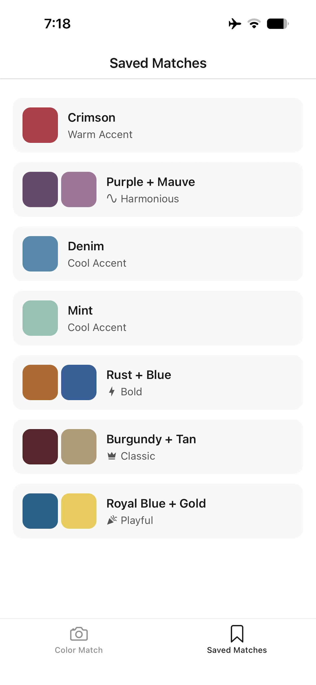
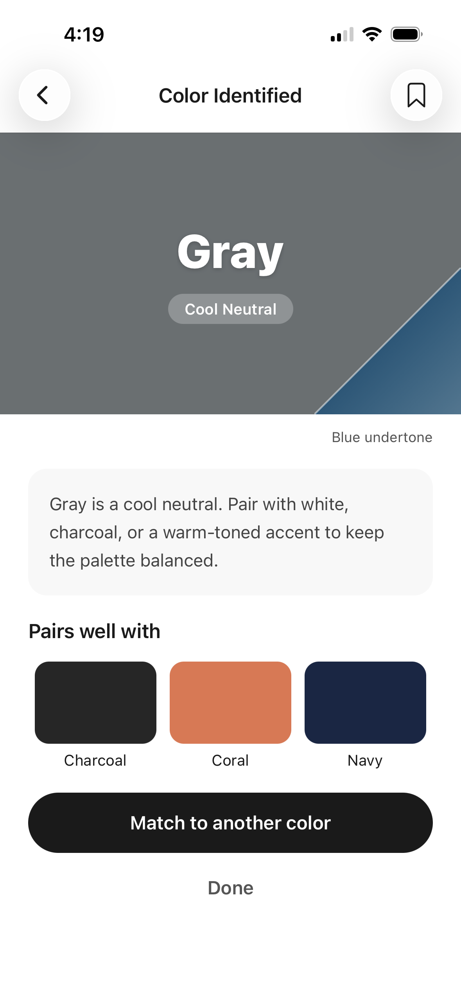
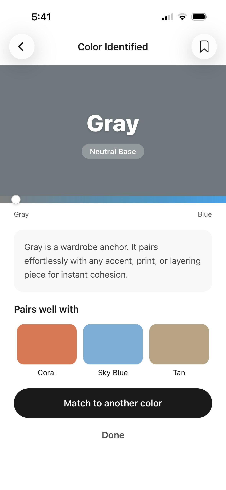
When a color reads as gray, the undertone spectrum bar shows exactly where it falls between neutral and its true hue. Finally understand the difference between a warm gray and a cool one.